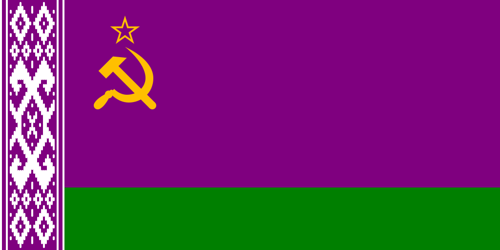

Низкогорская Советская Социалистическая Республика НССР / Низкогория
Является составной частью и основателем Союза Советских Левополитических Республик. Название до момента образования Советского Союза - НГСР, до момента падения монархического строя - Низкогорская Империя. Примечатальные города: Ельград - столица, научный и культурный центр (~3,2 млн), Псов - бытовая промышленность (1,6 млн), София - историческая столица, культурный центр (~1,2 млн), Одесса - рыбная промышленность, морской порт (~1,1 млн), Жданов - рудодобывающая промышленность, рыбная промышленность, морской порт (~1 млн), Корск - транспортная промышленность (~792 тыс), Рига - культурный центр, морской порт (~600 тыс). По площади страна занимает ~1/3 Европы.

Характеристика
Значение
Валюта
Советские рубль и копейка
Политический строй
Социализм
Религия
Агностицизм
Столица
Ельград
Символика
Флаг
Представляет собой полотнище, состоящее из двух вертикально расположенных цветных полос: верхней фиолетового цвета, составляющей три четверти высоты, и нижней зелёного цвета, составляющей одну четверть высоты флага, с изображением на верхнем левом углу фиолетовой полосы золотых серпа и молота, и пятиконечной звезды над ними. Отношение высоты к ширине 1:2.
Язык
Преобладание русов среди населения Низкогории, в том числе революционно активного, определило основу для создания и утверждения официального государственного Низкогорского языка, пришедшего на смену пиджину. Он может быть неотличим на слух от русского, но тем не менее не лишён отличий, как теоретических, так и практических, в связи с тем, что в нём общепринято строго соблюдать чуждые оригиналу парадигмы:
- Произношение определяет письменность, письменность используется для передачи информации в максимально исконном виде;
- Живой язык не стоит на месте в развитии и может принимать новые идеи;
- Запрещён лингво-фашизм - никто не имеет права указывать и заставлять кого-либо говорить и/или писать на родном ему языке только определённым образом.
- Произношение определяет письменность, письменность используется для передачи информации в максимально исконном виде;
- Живой язык не стоит на месте в развитии и может принимать новые идеи;
- Запрещён лингво-фашизм - никто не имеет права указывать и заставлять кого-либо говорить и/или писать на родном ему языке только определённым образом.
Следствями этих парадигм является то, что:
- Язык не считается ни с базовыми русскими правилами (тем более такими традиционными как [жы] / [шы] > ЖИ / ШИ, [ж] / [ш] > ЖЬ / ШЬ, [цца] > ТСЯ / ТЬСЯ), ни с какими другими, а приемлет только рекомендации, из которых главная - писать буквы и расставлять знаки препинания соответственно своему личному произношению;
- В алфавите не используются избыточные (неуникальные по звучанию) буквы, такие как Щ, в то же время не порочится Ё и есть место буквам из других алфавитов;
- Вместо полного повторения букв в словах (подряд), в ходу применение спец. символа - апострофа;
- Имеется официальный стандарт (для удобства), и множество других стилей, засчёт широкой вариативности комбинаций особенностей произношения (а в результате и написания).
- Язык не считается ни с базовыми русскими правилами (тем более такими традиционными как [жы] / [шы] > ЖИ / ШИ, [ж] / [ш] > ЖЬ / ШЬ, [цца] > ТСЯ / ТЬСЯ), ни с какими другими, а приемлет только рекомендации, из которых главная - писать буквы и расставлять знаки препинания соответственно своему личному произношению;
- В алфавите не используются избыточные (неуникальные по звучанию) буквы, такие как Щ, в то же время не порочится Ё и есть место буквам из других алфавитов;
- Вместо полного повторения букв в словах (подряд), в ходу применение спец. символа - апострофа;
- Имеется официальный стандарт (для удобства), и множество других стилей, засчёт широкой вариативности комбинаций особенностей произношения (а в результате и написания).
Переводчик
- Перевод
- Сохранения
- Ударения
-
Установка на фонетичную орфографию (слышится как пишется / пишется как слышится) относится ко всему, но стандарт придерживается некоторых исключений по отношению к смягчённой Ж / Ш, Ч перед твёрдой Ж / Ш и заимствованных слов.
Смягчённый согласный Ж / Ш > [ж'ж'] / [ш'ш']. Согласный Ч перед твёрдой Ж / Ш - [ч]. В заимствованных словах Е > [э]. -
Апостроф ' служит для отделения падежных окончаний от чисел, и для обозначения дубля предыдущей буквы (с учётом регистра) или себя - 16'ЫЙ > [шэснаццатый], ЛУН'ЫЙ > [лунный]. Рекомендован к использованию везде, кроме аббревиатур.
Смягчение всегда распространяется на всю последовательность (одинаковых) согласных, созданную с помощью апострофа. Так Н'Ь > [н'н'], или С'''Я > [с'с'с'с'а], но ЗЗЮ > [зз'у]. - Согласный Г / Ґ обозначает звук [ɣ] / [g], а гласный/полугласный У / Ў > [v] / [w].
- Йотированный гласный Е / Ё / Ю / Я, стоящий после гласного, но не перед Д, при чтении разрешается произносить так же, как после согласной (с полным отсутствием йотации) - ТАКОЕ > [такоэи], ВНИМАНИЕ > [вн'иман'иэи], ЦЭЛЕ' > [цэл'эиэи], ТЕРЯ' > [тер'аиаи], КЛЮ'Т > [кл'уиуит], ТЕ'РЬ > [тэиэир'], ТЕЯ > [т'эиаи], ЗМЕ''Д > [зм'эиэий'эид].
- ВАЖНО Для корректного перевода обязательны использование гласного Ё, при аканьи расстановка словарных ударений над О (или Ё / И, переходящей в неё) и при яканьи над любым ударным гласным после Е; Аббревиатуры не учитываются, требуется самостоятельная правка после обработки; При большой объёме текста будут наблюдаться подтормаживания; Работоспособность в старых браузерах не гарантируется.
Словарь
Все официально существующие русские словоформы + Нижеперечисленные: Устаревшие + Нелитературные (разговорные) + Альтернативные из родственных языков + Искусственные.
Слова, пересекающиеся по звучанию (не считая деталей произношения) с русскими, следует считать их функциональным расширением.